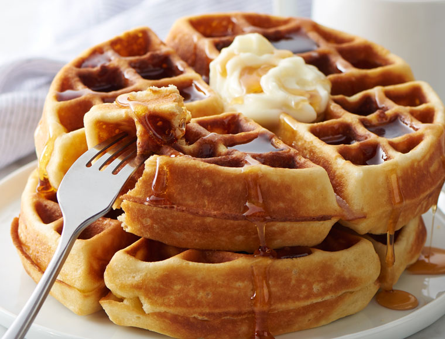

Waffles

Picture of some waffles, courtesy of Google
Belgian waffles are tender and flavorful waffles made with yeast They're great
topped with butter, whipped cream and fresh fruit.
Ingredients
- 1 (.25 Ounce) package active dry yeast
- 1/4 Cup Warm Milk
- 2 and 3/4 Cups Warm Milk
- 3 Egg Yolks
- 3/4 Cups Butter, melted and cooled to lukewarm
- 1/2 Cup White Sugar
- 1 and 1/2 Teaspoons Salt
- 2 Teaspoons Vanilla Extract
- 4 Cups All-Purpose Flour
- 2 Egg Whites
Steps
-
In a small bowl dissolve yeast in 1/4 cup warm milk. Let stnd until creamy, about 10 minutes.
-
In a large bowl, whisk together the egg yolks, 1/4 cup of the warm milk and the melted
butter. Stir in the yeast mixture, sugar, salt, and vanilla. Stir in the remaining 2 1/2
cups milk alternately with the flour, ending with the flour. Beat the egg whites until they
form soft peaks; fold into the batter. Vover the bowl tightly with plastic wrap. Let
rise in a warm place until doubled in voulme, about 1 hour.
-
Preheat the waffle iron. Brush with oil and spoon about 1/2 cup (or as recommended by manufacuturer)
onto center of iron. CLose the lid and bake until it stops steaming and the waffle is
golden brown. Serve immediately or keep warm in 200 degree oven.
Return to main page